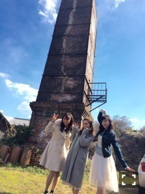
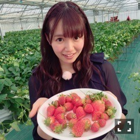
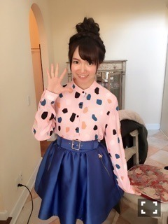

| 2016/03 09 Wed | ひめたん-0o0-その617 |
皆さんに嬉しいお知らせがあります！
私、来年度のらじらー！サンデー
アシスタントMCとして
レギュラー継続することになりました！

しかもポスター載るよ( ˆωˆ )♡
今年の春から番組が始まって
オリラジさんやスタッフの皆さんとの
素敵な出会いがあって、
一年間かけてたくさんのことを
学ばせていただいて、いつも
日曜日になるのが楽しみで楽しみで、
それくらい私にとって
らじらーはとても大切な時間。
リスナーの皆さんにも
そんなふうに思っていただけていたら
嬉しいです( ˆωˆ )
来年度のらじらー！も引き続き
よろしくお願いします！

BOMBER-E Pナイト
観てくれましたか～？
ステファニーさん、松田莉奈さんと
3人で常滑の街を
お散歩しましたo(^o^)o
女子会o(^o^)o
いちご狩りしたり、陶芸したり、
カフェでガールズトークしたり
とっても楽しい一日でした♡♡
また東京でお仕事でもプライベートでも
会えたらいいなと思ってますo(^o^)o
普段違う場所で活躍してる方々と
お話するのって
新鮮でワクワクしました！

いちごと一緒に写真撮るのって
すっごいアイドルっぽいよねo(^o^)o
日曜の夜は、らじらー！サンデー
ゲストは声優アーツに羽多野渉さん、
乃木坂から永島聖羅ちゃんが
出演してくれました！
せいらりんとは
46時間TV、海外収録のホテルなど
最近ずっと一緒にいる気がする(´｡•ω•｡`)
いつもとはまた違った
時間をお届け出来たと思います
何より私が楽しかったです(´｡•ω•｡`)
マッスル中元のラブリーパンプアップ♡
リスナーの皆さん私を気遣ったのか、
珍しくなかなかおたより来なかったとか。笑
コーナー楽しかったので
もし第2回があるなら遠慮せず
どんどん送ってあげてくださいね
あだ名は不服ですけどね！！！

金曜日はソニレコ配信日！
46時間TVの裏話や近況報告など
いつも戻りゆるゆるトークしてます(^o^)
お当番は鈴木絢音ちゃんです
是非観て下さい☆
14thシングル特典映像である
個人PVの予告編が解禁になりました！
監督は大澤健太郎さん。
オシャレなコメディです！
丸一日かけて撮影をしたので
全部撮り終わった頃には完全に
撮影チームが家族のような雰囲気でした！
予告編はお嬢様が
オシャレに目覚めて女を磨くところまで。
本編はカオスなことになってるかと......。
いろんな表情・いろんな私が
楽しんでいただけると思います(^o^)

～お知らせ～
3/12 キャンパスライブ@福島SP
3/18 AKB新聞
3/27 乃木坂46えいご
3/12 NHKラジオ第1 17:05～18:50
「キャンパスライブ@福島SP」
ちはる・中田・中元の3人で
出演させていただきます。
東日本大震災から5年、
福島から生放送でお送りします
皆さんと一緒に震災のことを
改めて考える時間にできたらと思います。
3/13はMV集特典イベント
お茶会・似顔絵会・録音会があります
来てくれる方はよろしくね( ˇωˇ )
(＊´・ω・＊)
コメント(935)
2016/03/09 23:48